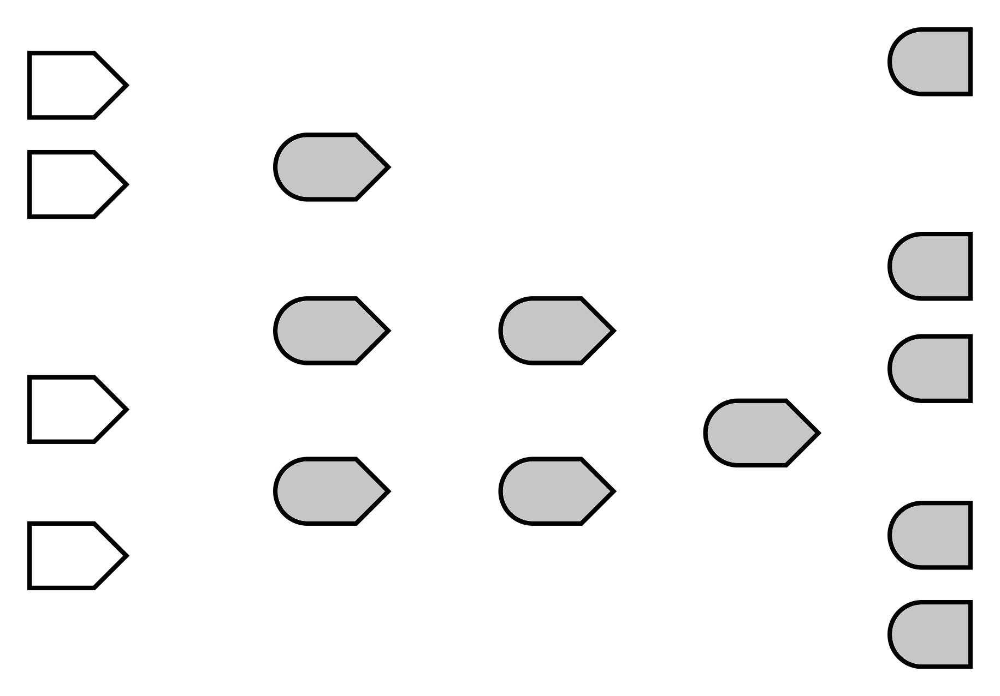
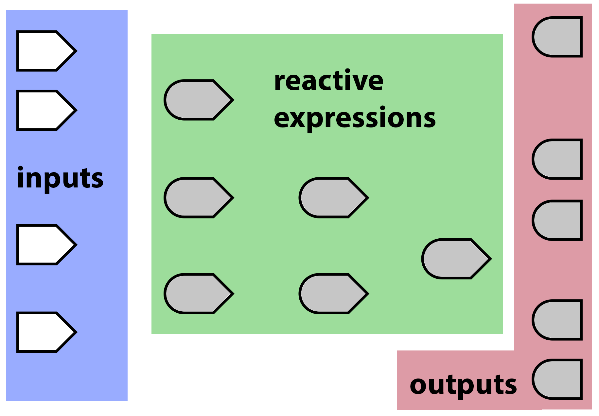
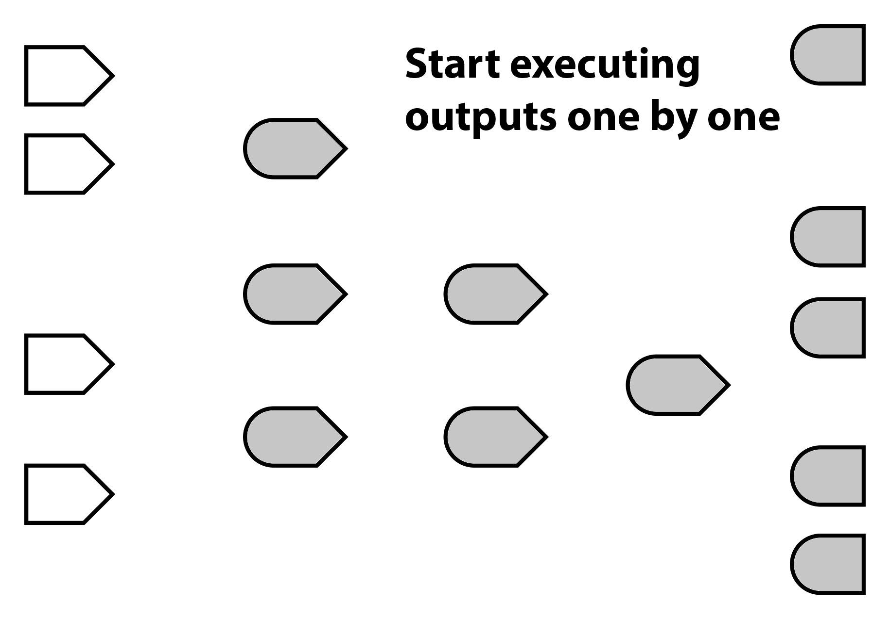
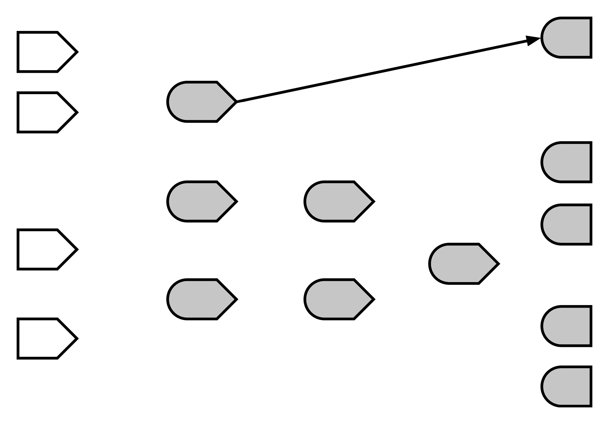
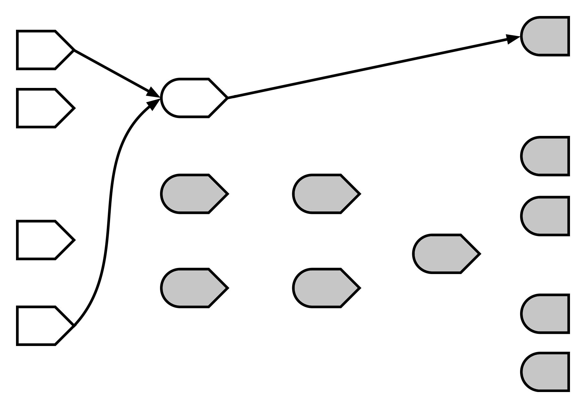
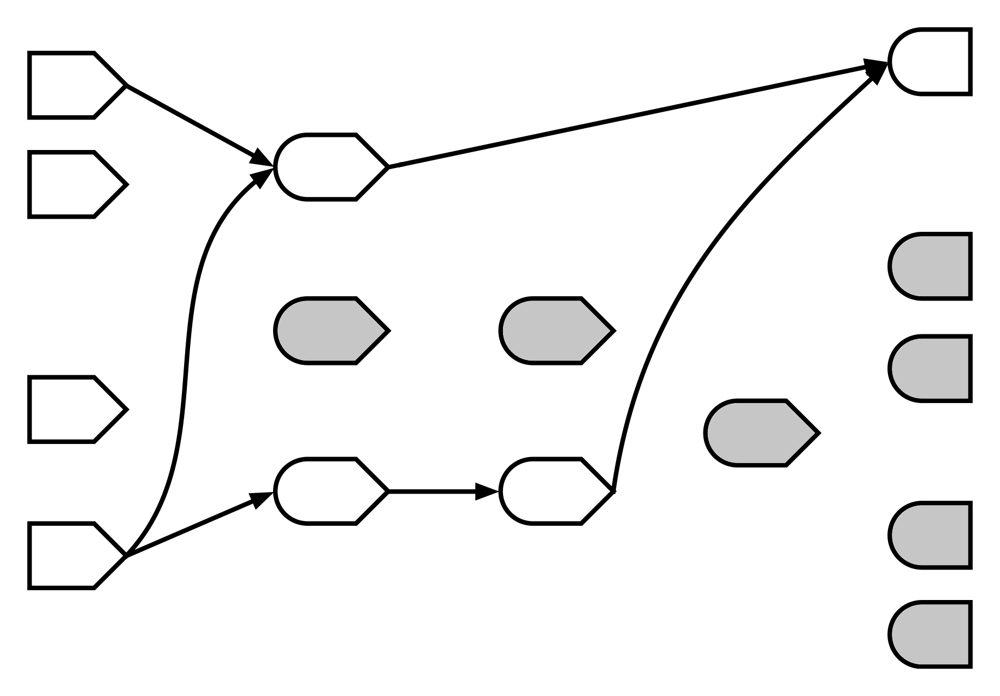
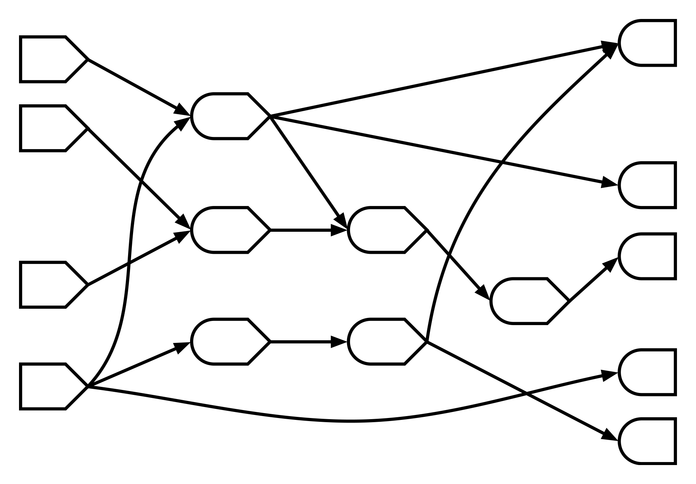
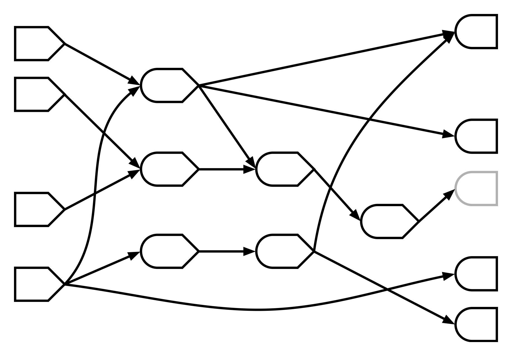
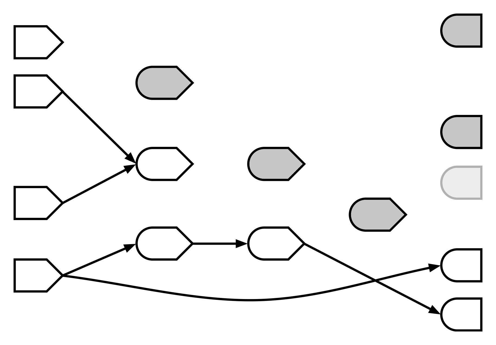
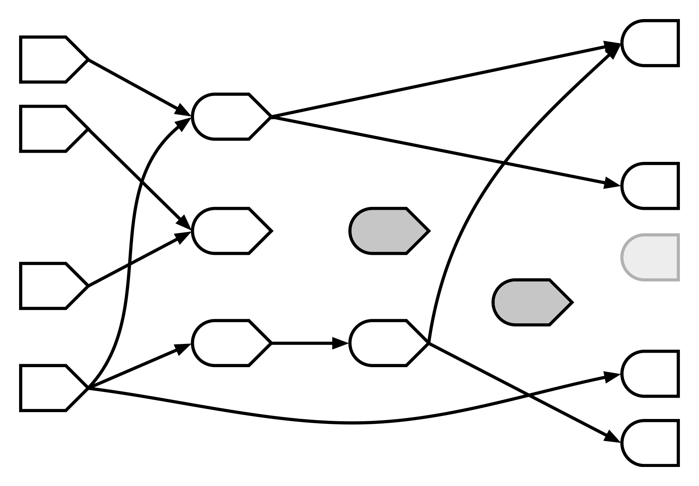

We’ll use RStudio Server for this tutorial. To grab an account:
(Don’t share user accounts with neighbors—if they sign in with your username, RStudio Server will end your session!)
Functions can be executed for one or both of the following reasons:
These are (a bit misleadingly) called side effects. Any effect that is not the return value is a side effect.
write.csv(...)
plot(cars)
print(x)
httr.POST(...)
alarm()# Sets a variable in a parent environment
value <<- 10
# Loads into global env by default
source("functions.R")
# Modifies the global search list
library(dplyr)
# Only if foo is an env, ref class, or R6
foo$bar <- TRUE# Modifying *local* variables
value <- 10
# Creating most kinds of objects
list(a = 1, b = 2)
# Data frames are pass-by-value in R so this is OK
dataset <- dataset %>% filter(count > 3)
# Most calculations
a + 1
summary(pressure)
lm(speed ~ dist, data = cars)
predict(wfit, interval = "prediction")# Reading from disk
readLines("data.csv")
# Making HTTP GET requests
httr.GET("https://api.example.com/data.json")
# Reading global variables
.Random.seed
# Modifying the random seed... ehhhhhh...
runif(10)If executing your function/expression leaves the state of the world a little different than before it executed, it has side effects.
But if “what happens in func, stays in func” (besides the return value), then it doesn’t have side effects.
For each function, write Yes if it has side effects, and No if not.
function(a, b) {
(b - a) / a
}function(values) {
globalenv()$values <- values
values
}function() {
options(digits.secs = 6)
as.character(Sys.time())
}function(df) {
df$foo <- factor(df$foo)
df
}function() {
readLines("~/data/raw.txt")
}function(values) {
hist(values, plot = TRUE)
}function() {
# Create temp file, and delete when function exits
filePath <- tempfile(fileext = ".png")
on.exit(file.unlink(filePath))
# Plot to the temp file as PNG image
png(filePath); plot(cars); dev.off()
# Return the contents of the temp file
readBin(filePath, "raw", n = file.info(filePath)$size)
}Side effects make code harder to reason about, since order of execution of different side-effecty functions can matter (in non-obvious ways).
But we still need them. Without side effects, our programs are useless! (If a program executes but has no observable interactions with the world, you may as well have not executed it at all!)
output and input.reactive()).observe() and/or observeEvent(). Has written reactive expressions that depend on other reactive expressions. Has used isolate() properly.reactive() vs. observe().Open Exercise_00.R and complete the server function. Make the plot output show a simple plot of the first nrows rows of a built-in dataset.
You have 3 minutes!
Hint: plot(head(cars, nrows))
Just joining us? Go to http://user2016.joecheng.com/signup/ to grab an RStudio Server account, where you’ll find these slides and the exercise files.
output$plot <- renderPlot({
plot(head(cars, input$nrows))
})observe({
df <- head(cars, input$nrows)
output$plot <- renderPlot(plot(df))
})output$plot1 <- renderPlot(...)
"plot1" with the result of this code.”"plot1".”Expressions that are reactive (obviously)
function(input, output, session) {
# When input$min_size or input$max_size change, large_diamonds
# will be notified about it.
large_diamonds <- reactive({
diamonds %>%
filter(carat >= input$min_size) %>%
filter(carat < input$max_size)
})
# If that happens, large_diamonds will notify output$table.
output$table <- renderTable({
large_diamonds() %>% select(carat, price)
}) ... continued ...
# Reactive expressions can use other reactive expressions.
mean_price <- reactive({
mean(large_diamonds()$price)
})
# large_diamonds and mean_price will both notify output$message
# of changes they detect.
output$message <- renderText({
paste0(nrow(large_diamonds()), " diamonds in that range, ",
"with an average price of $", mean_price())
})
}function(input, output, session) {
# This DOESN'T work.
large_diamonds <- diamonds %>%
filter(carat >= input$min_size) %>%
filter(carat < input$max_size)
output$table <- renderTable({
large_diamonds %>% select(carat, price)
})
}large_diamonds would only be calculated once, as the session starts (i.e. as the page first loads in a browser).
Open up the file Exercise_01.R.
There’s a new tableOutput("table") in ui.R. Have it show the same data frame that is being plotted, using renderTable.
Make sure that the head() operation isn’t performed more than once for each change to input$nrows.
You have 5 minutes.
Just joining us? Go to http://user2016.joecheng.com/signup/ to grab an RStudio Server account, where you’ll find these slides and the exercise files.
function(input, output, session) {
df <- reactive({
head(cars, input$nrows)
})
output$plot <- renderPlot({
plot(df())
})
output$table <- renderTable({
df()
})
}function(input, output, session) {
values <- reactiveValues(df = cars)
observe({
values$df <- head(cars, input$nrows)
})
output$plot <- renderPlot({
plot(values$df)
})
output$table <- renderTable({
values$df
})
}function(input, output, session) {
df <- cars
observe({
df <<- head(cars, input$nrows)
})
output$plot <- renderPlot({
plot(df)
})
output$table <- renderTable({
df
})
}Open up the file Exercise_02.R.
This is a working app–you can go ahead and run it. You choose variables from the iris (yawn) data set, and on various tabs it shows information about the selected variables and fits a linear model.
The problem right now, is that each of the four outputs contains copied-and-pasted logic for selecting out your chosen variables, and for building the model. Can you refactor the code so it’s more maintainable and efficient?
You have 5 minutes.
Just joining us? Go to http://user2016.joecheng.com/signup/ to grab an RStudio Server account, where you’ll find these slides and the exercise files.
selected <- reactive({
iris[, c(input$xcol, input$ycol)]
})
model <- reactive({
lm(paste(input$ycol, "~", input$xcol), selected())
})









# Don't do this!
# Introduce reactive value for each calculated value
values <- reactiveValues(selected = NULL, model = NULL)
# Use observers to keep the values up-to-date
observe({
values$selected <- iris[, c(input$xcol, input$ycol)]
})
observe({
values$model <- lm(paste(input$ycol, "~", input$xcol), values$selected)
})Observers are blocks of code that perform actions.
They’re executed in response to changing reactive values/expressions.
They don’t return a value.
observe({
cat("The value of input$x is now ", input$x, "\n")
})observe({...})observeEvent(eventExpr, {...})function(input, output, session) {
# Executes immediately, and repeats whenever input$x changes.
observe({
cat("The value of input$x is now ", input$x, "\n")
})
# Only executes when input$upload_button is pushed. Any reactive
# values/expressions encountered in the code block are treated
# as non-reactive values/expressions.
observeEvent(input$upload_button, {
httr::POST(server_url, jsonlite::toJSON(dataset()))
})
}Open Exercise_03.R.
Add server logic so that when the input$save button is pressed, the data is saved to a CSV file called "data.csv" in the current directory.
You have 5 minutes!
Just joining us? Go to http://user2016.joecheng.com/signup/ to grab an RStudio Server account, where you’ll find these slides and the exercise files.
# Use observeEvent to tell Shiny what action to take
# when input$save is clicked.
observeEvent(input$save, {
write.csv(df(), "data.csv")
})reactive()return().function(input, output, session) {
reactive({
# This code will never execute!
cat("The value of input$x is now ", input$x, "\n")
})
}r1 <- function() { runif(1) }
r1()
# [1] 0.8403573
r1()
# [1] 0.4590713
r1()
# [1] 0.9816089r2 <- reactive({ runif(1) })
r2()
# [1] 0.5327107
r2()
# [1] 0.5327107
r2()
# [1] 0.5327107The fact that reactive expressions are lazy and cached, is critical.
It’s hard to reason about when reactive expressions will execute their code—or whether they will be executed at all.
All Shiny guarantees is that when you ask a reactive expression for an answer, you get an up-to-date one.
observe() / observeEvent()return().reactive() |
observe() |
|---|---|
| Callable | Not callable |
| Returns a value | No return value |
| Lazy | Eager |
| Cached | N/A |
reactive() is for calculating values, without side effects.
observe() is for performing actions, with side effects.
A calculation is a block of code where you don’t care about whether the code actually executes—you just want the answer. Safe for caching. Use reactive().
An action is where you care very much that the code executes, and there is no answer (return value), only side effects. Use observe()/observeEvent().
(What if you want both an answer AND you want the code to execute? Refactor into two code chunks–separate the calculation from the action.)
reactive() |
observe() |
|
|---|---|---|
| Purpose | Calculations | Actions |
| Side effects? | Forbidden | Allowed |
Keep your side effects
Outside of your reactives
Or I will kill you
—Joe Cheng
eventReactive - observe : observeEvent = reactive : eventReactiveisolate - Blocking reactivityreactiveValues - Used in concert with observe/observeEvent, when you can’t model your app logic using the reactive graphinvalidateLater - Time-based reactivity (and so much more)validate and req - Elegant mechanisms for dealing with missing inputs and failed preconditionsshinySignals - Higher order reactives by Hadleyreq()Use req() to halt the current reactive/observer/output if a prerequisite condition is not met.
selectInput has no item selectedtextInputnumericInput